About
How did Ruukkilabra begin?
Ruukkilabra grew out of the need to develop physics learning material for the English-language programme of Kiviruukki upper secondary school, which opens in 2027. Very little English-language physics material that follows the Finnish upper secondary curriculum is available, so suitable material had to be developed from scratch.
At the same time, the idea of a broader learning environment took shape: why make material only in English when the same content could be offered in different language forms? That way, students from different language backgrounds could use the same material, even in the same teaching group.
One learning material, three language forms
Ruukkilabra aims to offer physics learning material in Finnish, in supported Finnish and in English. Students can switch between language forms as they need, explore concepts in different languages and progress from their own starting points.
The aim is not three separate textbooks but one shared learning environment that supports different learners.
Language should not become an unnecessary barrier to understanding physics.
Investigating, discovering and doing
Physics is learned by investigating phenomena, making observations, building models and solving problems – not just by reading theory or working through exercises.
Ruukkilabra combines theory, illustrations, simulations, experimental work and exercises. The material supports both independent study and teacher-guided learning. Experimental work is encouraged, and it is emphasised especially in classroom teaching, where phenomena can be investigated in practice.
AI as a development tool
Ruukkilabra is developed with agent-based AI production, especially for drafting raw versions of the content and for producing the language versions, illustrations, simulations and programming.
AI makes it possible to build a learning environment that would otherwise be very laborious for a single teacher to create.
The pedagogical decisions and the responsibility for the content, however, are mine. The material is checked and developed continuously, but errors may still occur.
Author
I am Lauri Hellsten, a teacher of physics, chemistry and mathematics from Espoo. I have worked for a long time in science education and in developing digital learning materials.
Ruukkilabra is my own learning material project. Although its starting point is the future teaching at Kiviruukki upper secondary school, the material is also meant for other teachers and students to use.
Ruukkilabra is developing all the time, and I welcome feedback and suggestions for improvement.
#ruukkirocks